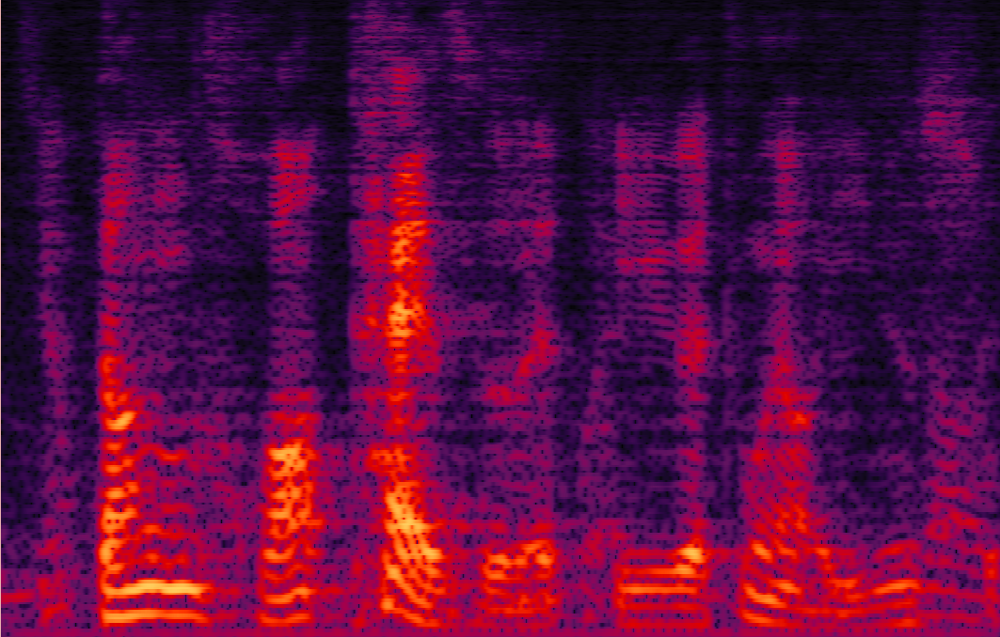
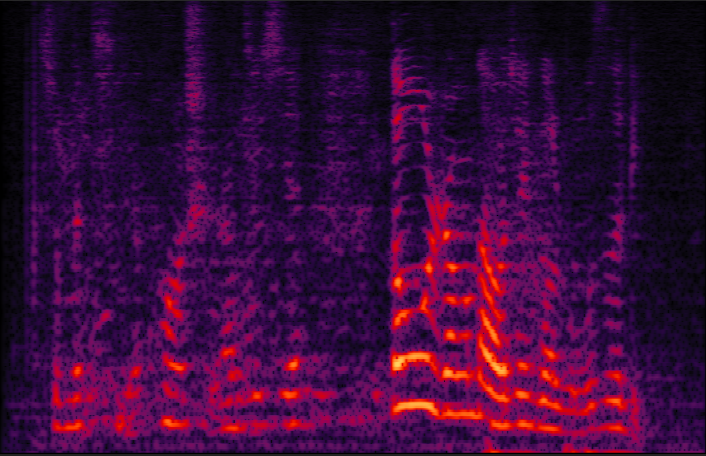

Submitted to Interspeech2021, Xiyun Li (lixiyun2020@ia.ac.cn), Yong Xu, Meng Yu, Shi-xiong Zhang, Jiaming Xu, Bo Xu, Dong Yu
Purely neural network based speech separation systems often cause nonlinear distortion on the separated speech, which is harmful for many automatic speech recognition (ASR) systems [1]. The minimum variance distortionless response (MVDR) beamformer can be used to minimize the distortion, yet conventional MVDR approaches still result in high level of residual noise [2,3]. In this study, we propose a self-attentive RNN (denoted as SA-RNN) beamformer framework to further improve our previous RNN-based beamformer [7,8] by leveraging on the powerful modeling capability of self-attention. Temporal-spatial self-attention module is proposed to better learn the beamforming weights from the speech and noise spatial covariance matrices. Our model can greatly remove the residual noise while ensuring the distortionless of the target speech. Our system outperforms prior arts in many objective evaluation metrics as well as the ASR accuracy.
A Mandarin audio-visual dataset [3,4,6,7,8] is adopted for this study, the word error rate (WER) is measured with a Tencent commercial mandarin speech recognition API [9].
Systems evaluated:
1. MIMO Conv-TasNet with STFT: A Conv-TasNet variant [5,6]
2. MIMO MVDR: An MVDR system [3]
3. MIMO Generalized RNN(GRNN) beamformer [8]
4. Proposed MIMO RNN+temporal SA beamformer
5. Proposed MIMO RNN+spatial SA beamformer
6. Proposed MIMO temporal-spatial SA beamformer
7. Proposed RNN+temporal-spatial SA beamformer
Wearing a headphone is strongly recommended.
Purely NN systems [4,5,6] can greatly remove the residual noise, but cause nonlinear distortion (e.g., blackhole on spectrogram).
Conventional MVDR systems [2,3] can ensure the distortionless of the target speech, while result in high level of residual noise.
Our proposed RNN+temporal-spatial SA beamformer systems can ensure the distortionless of the target speech while also eliminating the residual noise.
Demo1: Simulated 2-speaker noisy mixture for target speech separation separation
| Mix (2 speakers + non-stationary additive noise) | Reverberant clean of speaker1 (reference) | Reverberant clean of speaker2 (reference) |

| MIMO MVDR for speaker1 | MIMO MVDR for speaker2 | MIMO TasNet for speaker1 |
| MIMO TasNet for speaker2 | MIMO Generalized RNN beamformer for speaker1 | MIMO Generalized RNN beamformer for speaker2 |
| MIMO RNN+temporal-spatial SA beamformer for speaker1 | MIMO RNN+temporal-spatial SA beamformer for speaker2 |
Demo 2: Simulated 3-speaker noisy mixture for target speech separation

| Mix (3 speakers + non-stationary additive noise) | Reverberant clean (reference) of speaker1 | Reverberant clean (reference) of speaker2 | Reverberant clean (reference) of speaker3 |
| MIMO MVDR for speaker1 | MIMO MVDR for speaker2 | MIMO MVDR for speaker3 |

| MIMO Conv-TasNet for speaker1 | MIMO Conv-TasNet for speaker2 | MIMO Conv-TasNet for speaker3 |

| MIMO Generalized RNN for speaker1 | MIMO Generalized RNN for speaker2 | MIMO Generalized RNN for speaker3 |
| MIMO RNN+temporal-spatial SA beamformer for speaker1 | MIMO RNN+temporal-spatial SA beamformer for speaker2 | MIMO RNN+temporal-spatial SA beamformer for speaker3 |
Real-world scenario: far-field recording and testing:

Real-world recording hardware device: 15-element non-uniform linear microphone array and 180 degree wide-angle camera

For the real-world videos, the 180-degree wide-angle camera is calibrated and synchronized with the 15-channel mic array. We estimate the rough DOA of the target speaker according to the location of the target speaker in the whole camera view [4]. Face detection is applied to track the target speaker's DOA.
Demo 3: Real-world far-field recording and testing 1:
| Real-world scenario: far-field two-speaker mixture recorded by the camera and microphone array | Real-world scenario: separated male voice by our previously reported MIMO MVDR method [3] | Real-world scenario: separated female voice by our previously reported MIMO MVDR method [3] |
| Real-world scenario: separated male voice by our previously reported MIMO Conv-TasNet method [3] | Real-world scenario: separated female voice by our previously reported MIMO Conv-TasNet method [3] | Real-world scenario: separated male voice by the proposed SA-RNN method |
| Real-world scenario: separated female voice by the proposed SA-RNN method |
Demo 4: Real-world far-field recording and testing 2:
| Real-world scenario: far-field two-speaker mixture recorded by the camera and microphone array | Real-world scenario: separated male voice by our previously reported MIMO MVDR method [3] | Real-world scenario: separated female voice by our previously reported MIMO MVDR method [3] |
| Real-world scenario: separated male voice by our previously reported MIMO Conv-TasNet method [3] | Real-world scenario: separated female voice by our previously reported MIMO Conv-TasNet method [3] | Real-world scenario: separated male voice by the proposed SA-RNN method |
| Real-world scenario: separated female voice by the proposed SA-RNN method |
References:
[1] Du, Jun, et al. "Robust speech recognition with speech enhanced deep neural networks." Interspeech2014
[2] Xiao, Xiong, et al. "On time-frequency mask estimation for MVDR beamforming with application in robust speech recognition." ICASSP2017
[3] Xu, Yong, et al. "Neural Spatio-Temporal Beamformer for Target Speech Separation." accepted to Interspeech2020.
[4] Tan, Ke, et al. "Audio-visual speech separation and dereverberation with a two-stage multimodal network." IEEE Journal of Selected Topics in Signal Processing (2020).
[5] Luo, Yi, and Nima Mesgarani. "Conv-tasnet: Surpassing ideal time–frequency magnitude masking for speech separation." IEEE/ACM transactions on audio, speech, and language processing 27.8 (2019): 1256-1266.
[6] Gu R, Zhang S X, Xu Y, et al. Multi-modal multi-channel target speech separation[J]. IEEE Journal of Selected Topics in Signal Processing, 2020, 14(3): 530-541.
[7] Zhang, Zhuohuang, et al. "ADL-MVDR: All deep learning MVDR beamformer for target speech separation." arXiv preprint arXiv:2008.06994 (2020).
[8] Xu, Yong, et al. "Generalized RNN beamformer for target speech separation." arXiv preprint arXiv:2101.01280 (2021).
[9] Tencent ASR: https://ai.qq.com/product/aaiasr.shtml.